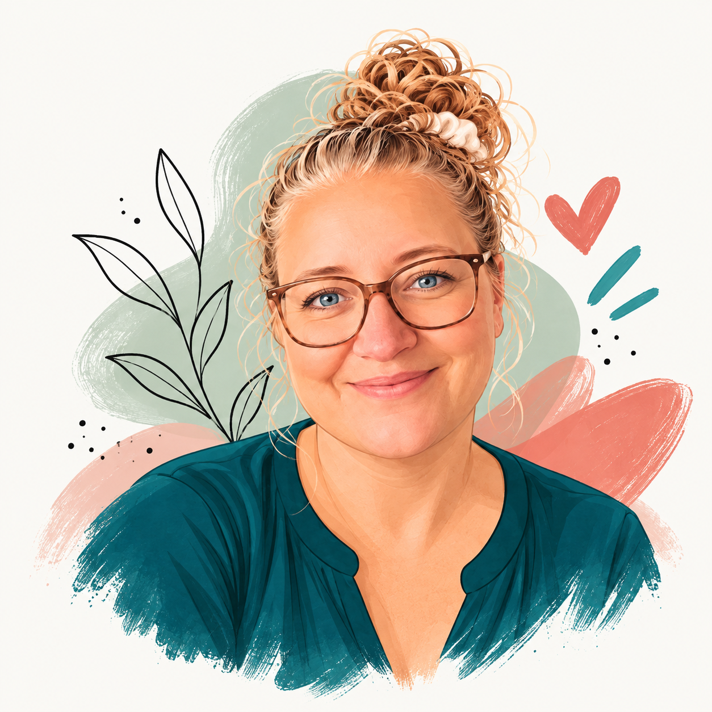

Om mig

-
Multimediedesigner-studerende på
IBA
-
UX, UI, frontend og AI som
ét workflow
-
Lærer HTML og CSS,
SCSS og JS er det næste
-
Tænker i
objekter
med OOUX
-
Skitserer alt i
Figma
-
På
3.
semester
-
Design Thinking i
praksis
-
Prompter med
omtanke
-
Bygger læring om cybersikkerhed i
Cyber Hero
-
Halvt
pixel,
halvt
prosa
Jeg er en
digital designer
med fokus på UX, design og webudvikling,
understøttet af AI.
Jeg kan lide, når det tekniske og det fortællende mødes.